In this article we will walk through using the Azure "Service Fabric". to my mind this is one of the most fascinating things in the Azure platform offerings.
We will also see how to use best practices such as dependency injection and proper logging, and how to keep sensitive data safe when deploying to what is essentially a public cloud.
So before we get into the guts of what this article does and how it does it. Just what is the "Service Fabric"?
To quote the official docs (they always say things quite nicely, little point in trying to rewrite what is already a good explanation)
Azure Service Fabric is a distributed systems platform that makes it easy to package, deploy, and manage scalable and reliable microservices and containers. Service Fabric also addresses the significant challenges in developing and managing cloud native applications. Developers and administrators can avoid complex infrastructure problems and focus on implementing mission-critical, demanding workloads that are scalable, reliable, and manageable. Service Fabric represents the next-generation platform for building and managing these enterprise-class, tier-1, cloud-scale applications running in containers.
This short video introduces Service Fabric and microservices:
service Fabric enables you to build and manage scalable and reliable applications composed of microservices that run at high density on a shared pool of machines, which is referred to as a cluster. It provides a sophisticated, lightweight runtime to build distributed, scalable, stateless, and tasteful micro services running in containers. It also provides comprehensive application management capabilities to provision, deploy, monitor, upgrade/patch, and delete deployed applications including containerized services.
Service Fabric powers many Microsoft services today, including Azure
SQL Database, Azure Cosmos DB, Cortana, Microsoft Power BI, Microsoft In tune,
Azure Event Hubs, Azure IoT Hub, Dynamics 365, Skype for Business, and many core
Azure services.
Service Fabric is tailored to create cloud native services that can
start small, as needed, and grow to massive scale with hundreds or thousands of
machines.
Today's Internet-scale services are built of micro services. Examples
of micro services include protocol gateways, user profiles, shopping carts,
inventory processing, queues, and caches. Service Fabric is a micro services
platform that gives every micro service (or container) a unique name that can be
either stateless or stateful.
Service Fabric provides comprehensive runtime and lifecycle
management capabilities to applications that are composed of these
micro services. It hosts micro services inside containers that are deployed and
activated across the Service Fabric cluster.
A move from virtual machines to containers makes possible an
order-of-magnitude increase in density. Similarly, another order of magnitude in
density becomes possible when you move from containers to micro services in these
containers. For example, a single cluster for Azure SQL Database comprises
hundreds of machines running tens of thousands of containers that host a total
of hundreds of thousands of databases. Each database is a Service Fabric
stateful micro service.
For more on the micro services approach, read Why a
microservices approach to building applications?
Service Fabric runs everywhere. You can create clusters for Service Fabric in many environments, including Azure or on premises, on Windows Server, or on Linux. You can even create clusters on other public clouds. In addition, the development environment in the SDK is identical to the production environment, with no emulators involved. In other words, what runs on your local development cluster deploys to the clusters in other environments.
Taken from https://docs.microsoft.com/en-us/azure/service-fabric/service-fabric-overview up on date 27/11/17
So the above is what the official Microsoft docs say, but what do I think?
Well yes its does all of the above, but what drove me to look and use the Service Fabric initially (A decision I have not regretted) is that is also offers these features
FabricClient .NET
object to communicate with the cluster
I have the code in my Github repo : https://github.com/sachabarber/MinimalAzureServiceFabricIOCSerilog
You will need to have the following components installed to run the code associated with this article
This article will hopefully give you a taster of what is possible with the Azure Service Fabric, and will also show you how to perform common best practices such as:
So we have talked a bit about the Service Fabric. But what sort of things can we run on the Service Fabric?
This is actually quite varied. For example this is what we see when we create a new Service Fabric app in Visual Studio.
CLICK FOR BIGGER IMAGE
Whilst I will not be going into all these different type of services, I will give a 1 line strap lines for each of them
For this article we will ONLY be examining "stateless service" as the techniques would apply to other types of services shown above fairly well.
When you create a new Service Fabric app, you will see something like this
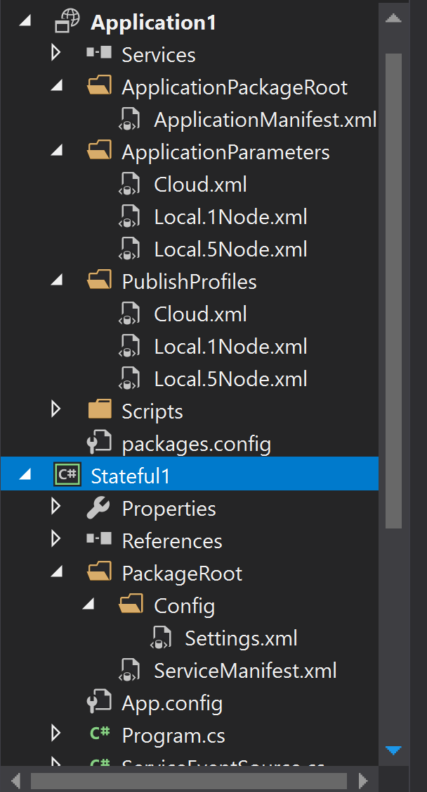
There are 2 distinct things at play here
The actual Application contains several VERY important things, namely:
Each individual service is its own project. And has its own config, ServiceManifest.xml file. We will look at that more later. For now its important just to understand that each Service has its own project.
The main code for a fresh out the box Service will looks very similar to this. But we will discuss this more later too.
using System;
using System.Collections.Generic;
using System.Fabric;
using System.Linq;
using System.Threading;
using System.Threading.Tasks;
using Microsoft.ServiceFabric.Data.Collections;
using Microsoft.ServiceFabric.Services.Communication.Runtime;
using Microsoft.ServiceFabric.Services.Runtime;
namespace Stateful1
{
/// <summary>
/// An instance of this class is created for each service
/// replica by the Service Fabric runtime.
/// </summary>
internal sealed class Stateful1 : StatefulService
{
public Stateful1(StatefulServiceContext context)
: base(context)
{ }
/// <summary>
/// Optional override to create listeners (e.g., HTTP, Service Remoting, WCF, etc.)
/// for this service replica to handle client or user requests.
/// </summary>
/// <remarks>
/// For more information on service communication,
/// see https://aka.ms/servicefabricservicecommunication
/// </remarks>
/// <returns>A collection of listeners.</returns>
protected override IEnumerable<ServiceReplicaListener> CreateServiceReplicaListeners()
{
return new ServiceReplicaListener[0];
}
/// <summary>
/// This is the main entry point for your service replica.
/// This method executes when this replica of your service becomes primary and has write status.
/// </summary>
/// <param name="cancellationToken">Canceled when Service Fabric needs to
/// shut down this service replica.</param>
protected override async Task RunAsync(CancellationToken cancellationToken)
{
// TODO: Replace the following sample code with your own logic
// or remove this RunAsync override if it's not needed in your service.
...
}
}
}
As stated above you may have 1 or more services. But when you start you will only have 1. To add another service you right click on the Application project, and Add. This is shown in the screen shot below.
CLICK FOR BIGGER IMAGE
The service fabric works a bit like tools like Kubernetes in that you describe what you want to run, and how many of them, and the fabric takes care of the rest. This is done via the ApplicationManifest.xml file
Application
The application has a very important file that deals with intentions ApplicationManifest.xml. This file may look as shown below, and is the file that relays the intentions of the deployment to the fabric. It has things about what services should be deployed, what version they are, how many of each, overridden parameters, what certificates to use etc etc
This is a very important file to understand
<?xml version="1.0" encoding="utf-8"?>
<ApplicationManifest ApplicationTypeName="Application1Type"
ApplicationTypeVersion="1.0.0"
xmlns="http://schemas.microsoft.com/2011/01/fabric"
xmlns:xsd="http://www.w3.org/2001/XMLSchema"
xmlns:xsi="http://www.w3.org/2001/XMLSchema-instance">
<Parameters>
<Parameter Name="Stateful1_MinReplicaSetSize" DefaultValue="3" />
<Parameter Name="Stateful1_PartitionCount" DefaultValue="1" />
<Parameter Name="Stateful1_TargetReplicaSetSize" DefaultValue="3" />
<Parameter Name="Stateless1_InstanceCount" DefaultValue="-1" />
</Parameters>
<!-- Import the ServiceManifest from the ServicePackage. The ServiceManifestName and ServiceManifestVersion
should match the Name and Version attributes of the ServiceManifest element defined in the
ServiceManifest.xml file. -->
<ServiceManifestImport>
<ServiceManifestRef ServiceManifestName="Stateful1Pkg" ServiceManifestVersion="1.0.0" />
<ConfigOverrides />
</ServiceManifestImport>
<ServiceManifestImport>
<ServiceManifestRef ServiceManifestName="Stateless1Pkg" ServiceManifestVersion="1.0.0" />
<ConfigOverrides />
</ServiceManifestImport>
<DefaultServices>
<!-- The section below creates instances of service types, when an instance of this
application type is created. You can also create one or more instances of service type using the
ServiceFabric PowerShell module.
The attribute ServiceTypeName below must match the name defined in the imported ServiceManifest.xml file. -->
<Service Name="Stateful1">
<StatefulService ServiceTypeName="Stateful1Type"
TargetReplicaSetSize="[Stateful1_TargetReplicaSetSize]"
MinReplicaSetSize="[Stateful1_MinReplicaSetSize]">
<UniformInt64Partition PartitionCount="[Stateful1_PartitionCount]"
LowKey="-9223372036854775808" HighKey="9223372036854775807" />
</StatefulService>
</Service>
<Service Name="Stateless1">
<StatelessService ServiceTypeName="Stateless1Type"
InstanceCount="[Stateless1_InstanceCount]">
<SingletonPartition />
</StatelessService>
</Service>
</DefaultServices>
</ApplicationManifest>
Service
So above we mentioned that each service has 2 things that are important from an infrastructure point of view, it has information about what the main entry point class is, and what endpoints this service has.
ServiceManifest.xml which might look like this, that describes how to luanch THAT service
<?xml version="1.0" encoding="utf-8"?>
<ServiceManifest Name="Stateful1Pkg"
Version="1.0.0"
xmlns="http://schemas.microsoft.com/2011/01/fabric"
xmlns:xsd="http://www.w3.org/2001/XMLSchema"
xmlns:xsi="http://www.w3.org/2001/XMLSchema-instance">
<ServiceTypes>
<!-- This is the name of your ServiceType.
This name must match the string used in RegisterServiceType call in Program.cs. -->
<StatefulServiceType ServiceTypeName="Stateful1Type" HasPersistedState="true" />
</ServiceTypes>
<!-- Code package is your service executable. -->
<CodePackage Name="Code" Version="1.0.0">
<EntryPoint>
<ExeHost>
<Program>Stateful1.exe</Program>
</ExeHost>
</EntryPoint>
</CodePackage>
<!-- Config package is the contents of the Config directoy under PackageRoot that contains an
independently-updateable and versioned set of custom configuration settings for your service. -->
<ConfigPackage Name="Config" Version="1.0.0" />
<Resources>
<Endpoints>
<!-- This endpoint is used by the communication listener to obtain the port on which to
listen. Please note that if your service is partitioned, this port is shared with
replicas of different partitions that are placed in your code. -->
<Endpoint Name="ServiceEndpoint" />
<!-- This endpoint is used by the replicator for replicating the state of your service.
This endpoint is configured through a ReplicatorSettings config section in the Settings.xml
file under the ConfigPackage. -->
<Endpoint Name="ReplicatorEndpoint" />
</Endpoints>
</Resources>
</ServiceManifest>
Settings.xml that might look like this, that describe what parameters THAT service expects
<?xml version="1.0" encoding="utf-8" ?>
<Settings xmlns:xsd="http://www.w3.org/2001/XMLSchema"
xmlns:xsi="http://www.w3.org/2001/XMLSchema-instance"
xmlns="http://schemas.microsoft.com/2011/01/fabric">
<!-- This is used by the StateManager's replicator. -->
<Section Name="ReplicatorConfig">
<Parameter Name="ReplicatorEndpoint" Value="ReplicatorEndpoint" />
</Section>
<!-- This is used for securing StateManager's replication traffic. -->
<Section Name="ReplicatorSecurityConfig" />
<!-- Add your custom configuration sections and parameters here. -->
<!--
<Section Name="MyConfigSection">
<Parameter Name="MyParameter" Value="Value1" />
</Section>
-->
</Settings>
So the service fabric also allows you to open up ports to the outside world. Now this may not be something you need to do at all, for example your service could get work via polling a database table, reading a queue, or getting sent a message via a bus, but if you do need to expose a port that is done in this method. You can read more about this here : https://aka.ms/servicefabricservicecommunication
protected override IEnumerable<ServiceReplicaListener> CreateServiceReplicaListeners()
To get a better understanding of this method, you could create a ASP .Net Core service fabric example that would fill this method in for you, so you could better understand it. For the code in this demo its just not relevant.
So you might now be wondering where do I put my own code? This is a simple question to answer. You simply fill in this method. You MUST observe the CancellationToken, if you do not the platform will boot your services down in the most dramatic way known. Observing the CancellationToken is your ONLY chance to shutdown gracefully.
protected override async Task RunAsync(CancellationToken cancellationToken)
To run the Service Fabric you MUST ensure that it runs with x64 as the platform. An example is shown below for the code that accompanies this article

CLICK FOR BIGGER IMAGE
The Service Fabric builds apon previous Azure successes, and Publish profiles are one such success. These are a simple idea, where we have a profile matched with a deployment that specifies the requirements needed for THAT deployments via some dedicated config.
Here is an example of publish profile file
<?xml version="1.0" encoding="utf-8"?>
<PublishProfile xmlns="http://schemas.microsoft.com/2015/05/fabrictools">
<ClusterConnectionParameters ConnectionEndpoint="XXXXXXXX.westus.cloudapp.azure.com:19000" />
<ApplicationParameterFile Path="..\ApplicationParameters\Cloud.xml" />
<CopyPackageParameters CompressPackage="true" />
</PublishProfile>
Where this just points to the relevant cluster endpoint, and specifies another file for the parameters to use
Here is that extra parameters file
<?xml version="1.0" encoding="utf-8"?>
<Application xmlns:xsd="http://www.w3.org/2001/XMLSchema"
xmlns:xsi="http://www.w3.org/2001/XMLSchema-instance"
Name="fabric:/SimpleStatelessServiceFabricDemo"
xmlns="http://schemas.microsoft.com/2011/01/fabric">
<Parameters>
<Parameter Name="Stateless1_InstanceCount" Value="-1" />
<Parameter Name="simpleStatelessServiceFabricDemo:EnvironmentName"
Value="Cloud" />
<Parameter Name="simpleStatelessServiceFabricDemo:serilog:write-to:Seq.restrictedToMinimumLevel"
Value="Information" />
<Parameter Name="simpleStatelessServiceFabricDemo:serilog:write-to:Seq.serverUrl"
Value="http://localhost:5341" />
<Parameter Name="simpleStatelessServiceFabricDemo:UseServiceFabricEnhancements"
Value="true" />
<Parameter Name="simpleStatelessServiceFabricDemo:SomeSafeKey"
Value="fdfdfdd" />
<Parameter Name="simpleStatelessServiceFabricDemo:CertThumbPrint"
Value="ad0665f13101c6258cbfae6e091c3f3155fe50d0" />
</Parameters>
</Application>
So we would normally have 1 x Publish Profile file, and 1 x Parameter file per environment that we wish to release to. The standard template that comes with Visual Studio for building Azure Service Fabric apps will allow you to specify which publish profile to release when you want to publish.
NOTE :
You must perform a "Package" step first before you "Publish", this creates the correct structure to release. This is avaiable via a right click in the main project (the one with the "ApplicationManifest.xml in it)

You do not need to publish if running locally. If however you wish to publish to a real cluster you can do that from Visual Studio. In which case steps are
As I stated in the introductory section of this article the Azure Service Fabric comes with a rather nice cluster manager (which I have to say looks like it stole a lot of inspiration from the DataStax Cassandra cluster manager). This cluster manager is accessible from the portal or via the system tray icon if you are running the cluster locally from Visual Studio.
From the cluster manager you can do these sort of things
As I say if running locally you can access this from the system tray icon, otherwise just grab the url from the Azure portal

Right click that icon, and choose "Manage local cluster" to see the Fabric explorer. This is available at a url of this form (get the correct url from your own setup or the Azure portal)
http://[YOUR HOST HERE]:19080/Explorer/Index.htm

CLICK FOR BIGGER IMAGE
So what exactly does the demo code do?
Ok now that we have covered the basics of what the fabric is, and looked at what a new project might look like and what methods we have, it's time to now turn our attention to the main part of this article which is to show how you can do all the normal stuff like:
The rest of this article will be covering these aspects
Like it or not, IOC/DI does play a part in providing a good separation of concerns, and allows for more testable pluggable code. To that end it is a good idea to apply IOC/DI to your own service fabric services.
But how, which container do I use, there are so many.
That's true there are a lot of containers, I looked around for the ones that have good support for service fabric, and then whittled that one down to the one I had used the most, which for me was Autofac (https://autofac.org/)
The service fabric support is not part of the main Autofac code base, but can be found here : https://github.com/autofac/Autofac.ServiceFabric with instructions on use here : https://alexmg.com/posts/introducing-the-autofac-integration-for-service-fabric
You could probably apply the code found here : https://github.com/autofac/Autofac.ServiceFabric to your favorite container, but for me I am happy enough to just use Autofac, so lets see how to use it.
So it starts by including these 2 Nuget packages (these will bring in the other transitive dependencies you need)
<package id="Autofac" version="4.6.2" targetFramework="net461" />
<package id="Autofac.ServiceFabric" version="1.0.0" targetFramework="net462" />
After you have that you will need build the Autofac container, and register the types you want, and also use the
RegisterServiceFabricSupport() extension method
Here is an example that registers a stateless service as well as a few other classes that the stateless service in this demo code rely on
using System;
using System.Collections.Generic;
using System.Linq;
using System.Text;
using System.Threading.Tasks;
using Autofac;
using Autofac.Integration.ServiceFabric;
using Serilog;
using Stateless1.Serilog.ServiceFabric;
namespace Stateless1
{
public class ContainerOperations
{
private static readonly Lazy<IContainer> _containerSingleton =
new Lazy<IContainer>(CreateContainer);
public static bool UseAzureWireup { get; set; }
public static IContainer Container => _containerSingleton.Value;
private static IContainer CreateContainer()
{
var builder = new ContainerBuilder();
builder.RegisterModule(new GlobalAutofacModule());
if (UseAzureWireup)
{
builder.RegisterServiceFabricSupport();
// This needs to match the name of gthe type in
//PackageRoot\ServiceManifest.xml AND ApplicationPackageRoot\ApplicationManifest
builder.RegisterStatelessService<Stateless1>("Stateless1Type");
}
return builder.Build();
}
}
public class GlobalAutofacModule : Module
{
protected override void Load(ContainerBuilder builder)
{
builder.Register<ILogger>(container => Program.LoggerSingleton.Value);
builder.RegisterType<ServiceLoggerFactory>()
.SingleInstance();
builder.RegisterType<ServiceConfiguration>()
.AsSelf()
.SingleInstance();
builder.Register(c => Log.Logger)
.As<ILogger>()
.SingleInstance();
}
}
}
NOTE: It is very important that you use the name of the service from the ApplicationPackageRoot\ApplicationManifest when
you register the services using Autofac, this allows the dynamic proxy that
Autofac will build to find the correct type/version of the service to create
Here is the relevant code for this demo service thathas dependencies that need satisfying
using System;
using System.Collections.Generic;
using System.Fabric;
using System.Linq;
using System.Threading;
using System.Threading.Tasks;
using Microsoft.ServiceFabric.Services.Communication.Runtime;
using Microsoft.ServiceFabric.Services.Runtime;
using Serilog;
using Stateless1.Extensions;
using Stateless1.Serilog.ServiceFabric;
namespace Stateless1
{
public class Stateless1 : StatelessService, IDisposable
{
private readonly ServiceConfiguration _configuration;
private ILogger _log;
public Stateless1(
StatelessServiceContext context,
ServiceLoggerFactory serviceLoggerFactory,
ServiceConfiguration configuration
) : base(context)
{
.....
.....
.....
.....
}
}
}
The final step for this Autofac example usage is the Program (main entry point) classes code, which is as shown below
using System;
using System.Diagnostics;
using System.Fabric;
using System.Threading;
using System.Threading.Tasks;
using Autofac;
using Microsoft.ServiceFabric.Services.Runtime;
using Serilog;
using Serilog.Events;
using Stateless1.Extensions;
namespace Stateless1
{
internal static class Program
{
private static ILogger _log = null;
internal static readonly Lazy<ILogger> LoggerSingleton =
new Lazy<ILogger>(ConfigureLogging);
/// <summary>
/// This is the entry point of the service host process.
/// </summary>
private static void Main()
{
_log = LoggerSingleton.Value;
try
{
ContainerOperations.UseAzureWireup = true;
using (var _container = ContainerOperations.Container)
{
LogAutofacRegistrations(_container);
_log.Information("Starting {AppName} v{AppVersion} application", AppName, AppVersion);
// The ServiceManifest.XML file defines one or more service type names.
// Registering a service maps a service type name to a .NET type.
// When Service Fabric creates an instance of this service type,
// an instance of the class is created in this host process.
// Prevents this host process from terminating so services keep running.
Thread.Sleep(Timeout.Infinite);
}
}
catch (Exception ex)
{
ServiceEventSource.Current.ServiceHostInitializationFailed(ex.ToString());
_log.Fatal(ex, $"Error starting {typeof(Stateless1).Name} Service");
throw;
}
}
private static void LogAutofacRegistrations(IContainer container)
{
foreach (var registration in container.ComponentRegistry.Registrations)
{
foreach (var service in registration.Services)
{
_log.Debug("Autofac: {dependency} resolves to {implementation}, {lifetime}, {sharing}, {ownership}",
service, registration.Activator.LimitType, registration.Lifetime,
registration.Sharing, registration.Ownership);
}
}
}
}
}
It can be seen (or rather not seen) that the code above NEVER creates a new service directly. This in stark contrast to the "out of the box" template code you get when creating a new Service Fabric app in Visual Studio. So how do our required services get started?
Well like I said above the line where you register your required services in the Autofac module uses the special string values from the Application/ApplicationManifest.xml. So Autofac takes care of bringing up those instances, which keeps the deployment happy
And that is all there is to the IOC side of things with Autofac. Like I say if you have some other favorite IOC container you may have to see if it supports the service fabric, if not you may have to dig about in here : https://github.com/autofac/Autofac.ServiceFabric to see if you can apply the same techniques to your container of choice
Ah logging, now what can you say you need to be able to log stuff right. Out of the box the Service Fabric template comes with this diagnostics writer (I have left that in the demo code for this article so you can see it), called "ServiceEventSource" which will have log messages turn up in the windows event log. Fair enough, but a bit crude for my taste.
There are many logging choices out there, but I do like the Serilog/Seq combination. I like Serilog cos it has lots of Sinks and like the concept of enrichers and it is a fully structured text logger, which is ace. I like Seq as it offers me a nice searchable web front end with pretty much 1 line of extra code.
Here is an example of Seq in action
CLICK FOR BIGGER IMAGE
So what do we need to set this up?
Well you will need to start with these Nuget packages
<package id="Serilog" version="2.6.0-dev-00925" targetFramework="net462" />
<package id="Serilog.Enrichers.Environment" version="2.1.3-dev-00736" targetFramework="net462" />
<package id="Serilog.Enrichers.Process" version="2.0.1" targetFramework="net462" />
<package id="Serilog.Formatting.Compact" version="1.0.1-dev-00922" targetFramework="net462" />
<package id="Serilog.Settings.AppSettings" version="2.1.2" targetFramework="net462" />
<package id="Serilog.Sinks.ColoredConsole" version="3.0.1" targetFramework="net462" />
<package id="Serilog.Sinks.Console" version="3.0.1" targetFramework="net462" />
<package id="Serilog.Sinks.File" version="4.0.0" targetFramework="net462" />
<package id="Serilog.Sinks.PeriodicBatching" version="2.1.1" targetFramework="net462" />
<package id="Serilog.Sinks.RollingFile" version="3.3.1-dev-00771" targetFramework="net462" />
<package id="Serilog.Sinks.Seq" version="4.0.0-dev-00150" targetFramework="net462" />
Then since we are using a cluster of nodes (recall the service fabric is a cluster of VMs), wouldn't it be nice if we could include the node that things were happening on in our log messages? I think so. How can we do that
Seq does allow you to supply runtime logging properties via things called "Enrichers" (see https://github.com/serilog/serilog/wiki/Enrichment). We can use these to add the extra logging values we want, lets see how
It starts with this simple helper class
using System;
using System.Collections.Generic;
using System.Fabric;
using System.Linq;
using System.Runtime.Remoting.Contexts;
using System.Text;
using System.Threading.Tasks;
using Serilog.Core;
using Serilog.Events;
namespace Stateless1.Serilog.ServiceFabric
{
public class ServiceEnricher<T> : ServiceFabricEnricher<T> where T : ServiceContext
{
private LogEventProperty _serviceName;
private LogEventProperty _partitionId;
private LogEventProperty _applicationName;
public ServiceEnricher(T context) : base(context)
{
}
public override void Enrich(LogEvent logEvent, ILogEventPropertyFactory propertyFactory)
{
base.Enrich(logEvent, propertyFactory);
if (_serviceName == null) _serviceName =
propertyFactory.CreateProperty("ServiceName", Context.ServiceName);
if (_partitionId == null) _partitionId =
propertyFactory.CreateProperty("PartitionId", Context.PartitionId);
if (_applicationName == null) _applicationName =
propertyFactory.CreateProperty("ApplicationName",
Context.CodePackageActivationContext.ApplicationName);
logEvent.AddPropertyIfAbsent(_serviceName);
logEvent.AddPropertyIfAbsent(_partitionId);
logEvent.AddPropertyIfAbsent(_applicationName);
}
}
}
Where we use the service fabric ServiceContext object to give us the extra service values to log.
Ok so another helper class is up next, but this time this gives us "node" information to log.
using System;
using System.Collections.Generic;
using System.Fabric;
using System.Linq;
using System.Text;
using System.Threading.Tasks;
using Serilog.Core;
using Serilog.Events;
namespace Stateless1.Serilog.ServiceFabric
{
public class ServiceFabricEnricher<T> : ILogEventEnricher where T : ServiceContext
{
protected T Context { get; }
private LogEventProperty _nodeName;
public ServiceFabricEnricher(T context)
{
Context = context;
}
public virtual void Enrich(LogEvent logEvent, ILogEventPropertyFactory propertyFactory)
{
if (_nodeName == null)
{
_nodeName = propertyFactory.CreateProperty("NodeName",
Context.NodeContext.NodeName);
}
logEvent.AddPropertyIfAbsent(_nodeName);
}
}
}
And then we need a custom logger factory
using System;
using System.Collections.Generic;
using System.Fabric;
using System.Linq;
using System.Text;
using System.Threading;
using System.Threading.Tasks;
using Microsoft.ServiceFabric.Services.Runtime;
using Serilog;
namespace Stateless1.Serilog.ServiceFabric
{
public class ServiceLoggerFactory
{
private ILogger _logger;
private int _hasBeenEnriched;
public ServiceLoggerFactory(ILogger logger)
{
_logger = logger;
}
public ILogger EnrichLoggerForStatelessServiceContext(StatelessService service)
{
if (Interlocked.Exchange(ref _hasBeenEnriched, 1) == 0)
{
_logger = _logger?.ForContext(new[]
{
new ServiceEnricher<StatelessServiceContext<(service.Context)
}
);
}
return _logger;
}
public ILogger GetEnrichedLogger()
{
return _logger;
}
}
}
We then need to apply this to the actual services such that they use the enrichers. We MUST only apply the enrichers in the services themselves as they ARE the things that will have information about the service/nodes, as the services ARE the things that ARE run on the service fabric cluster. Applying the enrichers any where else will not work. This work can be done in the service constructor code
using System;
using System.Collections.Generic;
using System.Fabric;
using System.Linq;
using System.Threading;
using System.Threading.Tasks;
using Microsoft.ServiceFabric.Services.Communication.Runtime;
using Microsoft.ServiceFabric.Services.Runtime;
using Serilog;
using Stateless1.Extensions;
using Stateless1.Serilog.ServiceFabric;
namespace Stateless1
{
public class Stateless1 : StatelessService, IDisposable
{
private readonly ServiceConfiguration _configuration;
private ILogger _log;
public Stateless1(
StatelessServiceContext context,
ServiceLoggerFactory serviceLoggerFactory,
ServiceConfiguration configuration
) : base(context)
{
if (configuration == null)
{
throw new ArgumentNullException(nameof(configuration));
}
_configuration = configuration;
//ENRICH
_log = serviceLoggerFactory.EnrichLoggerForStatelessServiceContext(this);
_log.Information("Stateless1 constructed ok");
}
}
}
The very last thing to do is configure the logging. This is a standard thing to have to do with Serilog. This can be done in the Program (main entry point)
code.
using System;
using System.Diagnostics;
using System.Fabric;
using System.Threading;
using System.Threading.Tasks;
using Autofac;
using Microsoft.ServiceFabric.Services.Runtime;
using Serilog;
using Serilog.Events;
using Stateless1.Extensions;
namespace Stateless1
{
internal static class Program
{
private static ILogger _log = null;
internal static readonly Lazy<ILogger> LoggerSingleton = new Lazy<ILogger>(ConfigureLogging);
/// <summary>
/// This is the entry point of the service host process.
/// </summary>
private static void Main()
{
_log = LoggerSingleton.Value;
.....
.....
.....
.....
}
private static ILogger ConfigureLogging()
{
AppDomain.CurrentDomain.ProcessExit += (sender, args) => Log.CloseAndFlush();
var configPackage = FabricRuntime.GetActivationContext().GetConfigurationPackageObject("Config");
var environmentName = GetSetting(configPackage, "appSettings",
"simpleStatelessServiceFabricDemo:EnvironmentName");
var seqRestrictedToMinimumLevel = GetSetting(configPackage,
"appSettings", "simpleStatelessServiceFabricDemo:serilog:write-to:Seq.restrictedToMinimumLevel");
var seqServerUrl = GetSetting(configPackage,
"appSettings", "simpleStatelessServiceFabricDemo:serilog:write-to:Seq.serverUrl");
var seqLogEventLevel = LogEventLevel.Verbose;
Enum.TryParse(seqRestrictedToMinimumLevel, true, out seqLogEventLevel);
var loggerConfiguration = new LoggerConfiguration()
.WriteTo.Seq(seqServerUrl, restrictedToMinimumLevel: seqLogEventLevel)
.Enrich.WithProperty("AppName", Program.AppName)
.Enrich.WithProperty("AppVersion", Program.AppVersion)
.Enrich.WithProperty("EnvName", environmentName);
if (Environment.UserInteractive)
{
loggerConfiguration.WriteTo.ColoredConsole();
}
return Log.Logger = loggerConfiguration.CreateLogger();
}
private static string GetSetting(ConfigurationPackage configurationPackage, string section, string parameterName)
{
var param = configurationPackage.Settings.Sections[section].Parameters[parameterName];
return param.IsEncrypted ? param.DecryptValue().ConvertToUnsecureString() : param.Value;
}
public static readonly string AppName = typeof(Program).Assembly.GetName().Name;
public static readonly string AppVersion = typeof(Program).Assembly.GetInformationalVersion();
}
}
Now there is some funky code in there that deals with getting values out of the many layers of service fabric config files. This is something we will be getting into below.
For now just understand that you may want "Verbose" in dev environment, and "Error" in production environment, which as stated right at the start of this article, would be handled by different "publish profile" / "parameter file" files. We will look at this next, but in order to get stuff out of these files we need to use the service fabric configuration system, which is why this code above looks a bit funky. It is essentially pulling values from the correct config location to match the specified environment, but as I say more on this later.
So we have seen several parts of this already above, we have seen that each
Service within the Azure Service Fabric can have its own settings.xml
file, and that these service(s) are owned by a overall application that has its
own ApplicationManifest.xml file. So how do the parameters for the
services work, can we provide parameters to them. Well yes we can.
The following diagram should illustrate the workflow I hope
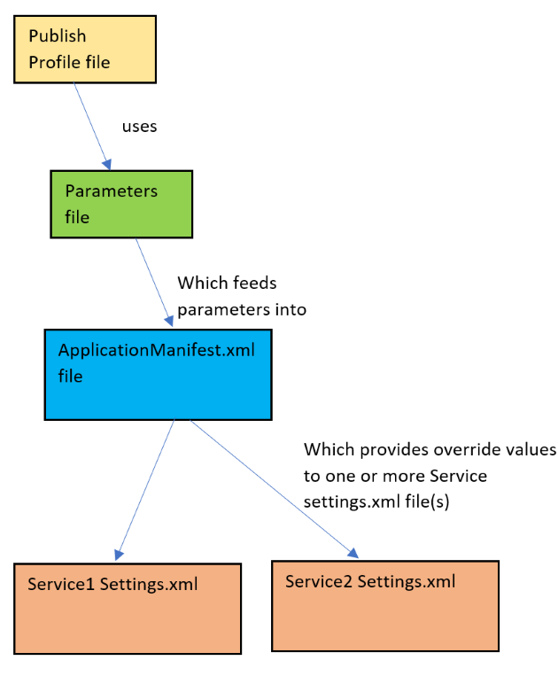
Lets have a look at these from top to bottom, as stated above it starts when you choose a publish profile file, which we looked at above but here is one anyway to remind you
<?xml version="1.0" encoding="utf-8"?>
<PublishProfile xmlns="http://schemas.microsoft.com/2015/05/fabrictools">
<ClusterConnectionParameters ConnectionEndpoint=""XXXXX.canadacentral.cloudapp.azure.com:19000 />
<ApplicationParameterFile Path="..\ApplicationParameters\Cloud.xml" />
<CopyPackageParameters CompressPackage="true" />
</PublishProfile>
This specifies which parameter file to use. In this case ApplicationParameters\Cloud.xml which looks like this
<?xml version="1.0" encoding="utf-8"?>
<Application xmlns:xsd="http://www.w3.org/2001/XMLSchema"
xmlns:xsi="http://www.w3.org/2001/XMLSchema-instance"
Name="fabric:/SimpleStatelessServiceFabricDemo"
xmlns="http://schemas.microsoft.com/2011/01/fabric">
<Parameters>
<Parameter Name="Stateless1_InstanceCount" Value="-1" />
<Parameter Name="simpleStatelessServiceFabricDemo:EnvironmentName"
Value="Cloud" />
<Parameter Name="simpleStatelessServiceFabricDemo:serilog:write-to:Seq.restrictedToMinimumLevel"
Value="Information" />
<Parameter Name="simpleStatelessServiceFabricDemo:serilog:write-to:Seq.serverUrl"
Value="http://localhost:5341" />
<Parameter Name="simpleStatelessServiceFabricDemo:UseServiceFabricEnhancements"
Value="true" />
<Parameter Name="simpleStatelessServiceFabricDemo:SomeSafeKey"
Value="fdfdfdd" />
<Parameter Name="simpleStatelessServiceFabricDemo:CertThumbPrint"
Value="ad0665f13101c6258cbfae6e091c3f3155fe50d0" />
</Parameters>
</Application>
See how it simply provides parameters. These will then feed into the main ApplicationManifest.xml. Lets see that now
<?xml version="1.0" encoding="utf-8"?>
<ApplicationManifest xmlns:xsd="http://www.w3.org/2001/XMLSchema"
xmlns:xsi="http://www.w3.org/2001/XMLSchema-instance"
ApplicationTypeName="SimpleStatelessServiceFabricDemoType" A
pplicationTypeVersion="1.0.0"
xmlns="http://schemas.microsoft.com/2011/01/fabric">
<Parameters>
<Parameter Name="Stateless1_InstanceCount"
DefaultValue="-1" />
<Parameter Name="simpleStatelessServiceFabricDemo:EnvironmentName"
DefaultValue="dev90" />
<Parameter Name="simpleStatelessServiceFabricDemo:serilog:write-to:Seq.restrictedToMinimumLevel"
DefaultValue="" />
<Parameter Name="simpleStatelessServiceFabricDemo:serilog:write-to:Seq.serverUrl"
DefaultValue="" />
<Parameter Name="simpleStatelessServiceFabricDemo:UseServiceFabricEnhancements"
DefaultValue="false" />
<Parameter Name="simpleStatelessServiceFabricDemo:SomeSafeKey"
DefaultValue="" />
<Parameter Name="simpleStatelessServiceFabricDemo:CertThumbPrint"
DefaultValue="" />
</Parameters>
<!-- Import the ServiceManifest from the ServicePackage. The ServiceManifestName and ServiceManifestVersion
should match the Name and Version attributes of the ServiceManifest element defined in the
ServiceManifest.xml file. -->
<ServiceManifestImport>
<ServiceManifestRef ServiceManifestName="Stateless1Pkg" ServiceManifestVersion="1.0.0" />
<ConfigOverrides>
<ConfigOverride Name="Config">
<Settings>
<Section Name="appSettings">
<Parameter Name="simpleStatelessServiceFabricDemo:EnvironmentName"
Value="[simpleStatelessServiceFabricDemo:EnvironmentName]" />
<Parameter Name="simpleStatelessServiceFabricDemo:serilog:write-to:Seq.restrictedToMinimumLevel"
Value="[simpleStatelessServiceFabricDemo:serilog:write-to:Seq.restrictedToMinimumLevel]" />
<Parameter Name="simpleStatelessServiceFabricDemo:serilog:write-to:Seq.serverUrl"
Value="[simpleStatelessServiceFabricDemo:serilog:write-to:Seq.serverUrl]" />
<Parameter Name="simpleStatelessServiceFabricDemo:UseServiceFabricEnhancements"
Value="[simpleStatelessServiceFabricDemo:UseServiceFabricEnhancements]" />
</Section>
<Section Name="encryptedSettings">
<Parameter Name="simpleStatelessServiceFabricDemo:SomeSafeKey"
Value="[simpleStatelessServiceFabricDemo:SomeSafeKey]"
IsEncrypted="true" />
</Section>
</Settings>
</ConfigOverride>
</ConfigOverrides>
</ServiceManifestImport>
....
....
....
....
</ApplicationManifest>
There are a few points to note here
ServiceManifestName="Stateless1Pkg" ServiceManifestVersion="1.0.0"[simpleStatelessServiceFabricDemo:SomeSafeKey]
say
ok so now that we have seen how the parameters come in, and get overriden at
the top level, we are nearly done and just need to examine how the very bottom
layer (the actual service) declares the parameters to begin with. This is done
per service in a Settings.xml file. Here is the demo apps one:
<?xml version="1.0" encoding="utf-8" ?>
<Settings xmlns:xsd="http://www.w3.org/2001/XMLSchema"
xmlns:xsi="http://www.w3.org/2001/XMLSchema-instance"
xmlns="http://schemas.microsoft.com/2011/01/fabric">
<!-- Add your custom configuration sections and parameters here -->
<Section Name="appSettings">
<Parameter Name="simpleStatelessServiceFabricDemo:EnvironmentName"
Value="" MustOverride="true"
IsEncrypted="false"/>
<Parameter Name="simpleStatelessServiceFabricDemo:serilog:write-to:Seq.restrictedToMinimumLevel"
Value="" MustOverride="true"
IsEncrypted="false"/>
<Parameter Name="simpleStatelessServiceFabricDemo:serilog:write-to:Seq.serverUrl"
Value=""
MustOverride="true"
IsEncrypted="false"/>
<Parameter Name="simpleStatelessServiceFabricDemo:UseServiceFabricEnhancements"
Value=""
MustOverride="true"
IsEncrypted="false"/>
</Section>
<Section Name="encryptedSettings">
<Parameter Name="simpleStatelessServiceFabricDemo:SomeSafeKey"
Value=""
MustOverride="false"
IsEncrypted="true"/>
</Section>
</Settings>
And thats really how the new config system hangs together.
Ok so we have seen that we can have encrypted/non-encrypted parameters. It is probably a good idea to encrypt the connection strings (in my opinion). This article is a MUST read as this is what we will be doing next
https://docs.microsoft.com/en-us/azure/service-fabric/service-fabric-application-secret-management
The basic idea is that we use a cipher certificate to encrypt our sensitive
data, and have the service fabric be aware of the cerifcate we used. This means
telling it what cert to try and find, and telling it which parameters are
encrypted. The certificates are typically created in Azure KeyVault and then
MUST be installed on ALL nodes in the cluster (and your dev VM to if you wish to
run the service with the IsEncrypted="true" for your parameters.
For my dev work, I regularly change the params to IsEncrypted="false"
and just change them back just before I check in. But it's your call.
This diagram shows the basic idea
CLICK FOR BIGGER IMAGE
A data encipherment certificate is used strictly for encryption and decryption of configuration values in a service's Settings.xml and is not used for authentication or signing of cipher text. The certificate must meet the following requirements:
You can create a self sign certificate to test stuff out, though for a proper production release you should use KeyVault/PowerShell to create the certificates in the portal, and then download them as a .pfx file and install them in the local machine store.
For now though lets create a new cipher certificate to test with. This can be done with the following PowerShell command
New-SelfSignedCertificate -Type DocumentEncryptionCert -KeyUsage DataEncipherment -Subject mydataenciphermentcert -Provider 'Microsoft Enhanced Cryptographic Provider v1.0'
If you run this in PowerShell and it will install a new certificate in the your local machine store. This is shown here
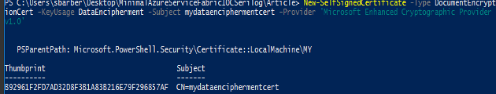
To clarify this has been installed you can open the local machine store.
To do this (I am using Windows 10 so instructions may vary)
Click on the windows icon
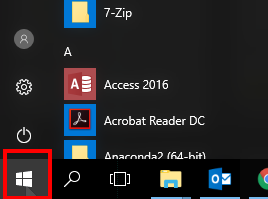
Then start typing "cert" and you will see the following
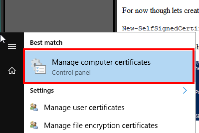
click that, then navigate to the following location you should see a new certificate created at same time as the PowerShell command was run above
CLICK FOR BIGGER IMAGE
We had an issue at work where we were using PowerShell to create the encryption certificates, and we would always get some weird "ACL certificate" exception. This turned out to be due to an older version of the Azure PowerShell encryption module being used. So make sure you have the latest module in use
Ok so lets say you did things for a production setup, or non playground experiment, and you have the .pfx file (remember the type MUST be "DocumentEncryptionCert") you will need to install that into the local machine store. This can be done as follows. Please bear in mind that a proper environment (non self signed certificate) should be password protected.
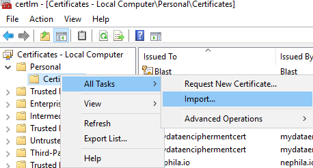
So now that we have seen the nice new shiny config system described above, how do we make sure our connection strings are nice and safe? There are a couple of steps to make this happen.
The easiest way it to grab the thumbprint from the Azure KeyVault portal blade if you went that way (which you should). However if you have the certificate installed into the local machine store, you can grab the thumbprint as follows
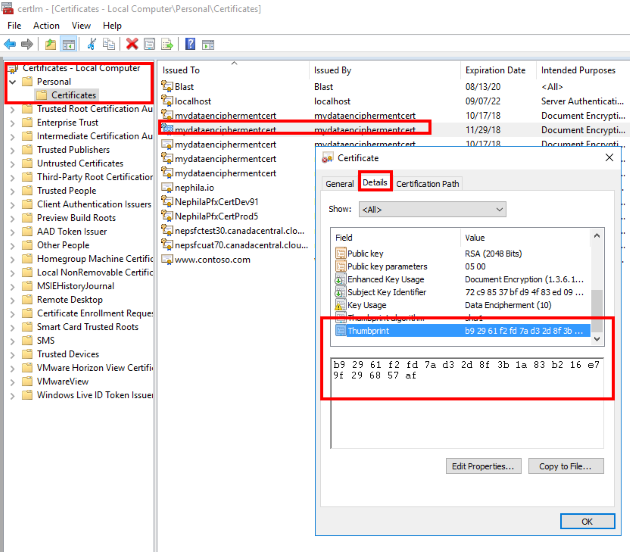
Copy the value from the thumbprint area. There is a bug with this dialog though, and a hidden character exists at the beginning of the thumbprint. The best way to see that is just copy the text and paste it into PowerShell window, and remove the special character and spaces, then keep final string safe
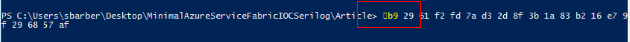
So for this example we would end up with final thumbprint value of
b92961f2fd7ad32d8f3b1a83b216e79f296857af
You will now need to use the thumbprint from step 1 above to add to the
ApplicationManifest.xml (remember this certificate WILL need to be available on
all node VMs in the cluster)
<?xml version="1.0" encoding="utf-8"?>
<ApplicationManifest xmlns:xsd="http://www.w3.org/2001/XMLSchema" xmlns:xsi="http://www.w3.org/2001/XMLSchema-instance" ApplicationTypeName="SimpleStatelessServiceFabricDemoType" ApplicationTypeVersion="1.0.0" xmlns="http://schemas.microsoft.com/2011/01/fabric">
.....
.....
.....
<Principals>
<Users>
<User Name="SfUser" AccountType="NetworkService" />
</Users>
</Principals>
<Policies>
<SecurityAccessPolicies>
<SecurityAccessPolicy ResourceRef="EnvCipherCert" PrincipalRef="SfUser" ResourceType="Certificate" />
</SecurityAccessPolicies>
</Policies>
<Certificates>
<SecretsCertificate X509FindValue="[simpleStatelessServiceFabricDemo:CertThumbPrint]" Name="EnvCipherCert" X509FindType="FindByThumbprint" />
</Certificates>
</ApplicationManifest>
Now make sure you have updated the relevant Parameters file. Here is an example of one that I updated with the thumbprint

The advantage of using a parameter file for this rather than hardcode it in
ApplicationManifest.xml is that you can have a different one per
environment should you wish to.
Ok so now we need to make sure the parameters you want to encrypt are
actually specified as IsEncrypted="true". We do this in both the
ApplicationManifest.xml and Setting.xml that the
ApplicationManifest.xml parameters override.
ApplicationManifest.xml
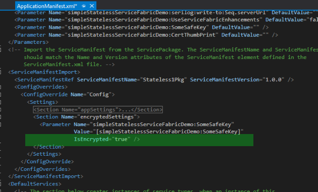
Example service Settings.xml
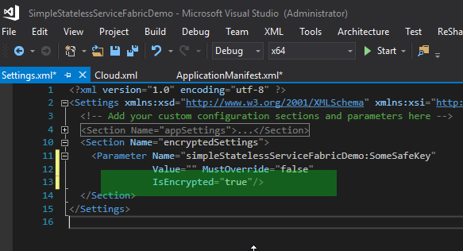
Now we need to encrypt the values using the certificate that has been used. I
have provided a little PowerShell script in the code that you can use
Encrypt-Secret.ps1 which you simply call from powershell like this
.\Encrypt-Secret.ps1 "b92961f2fd7ad32d8f3b1a83b216e79f296857af" "I want this text encrypted"
The result will be something like this
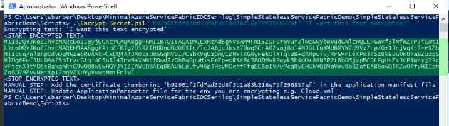
Now copy all the text inside the <START ENCRYPTED TEXT> to <END ENCRYPTED TEXT> and make sure its all one line with no spaces. Then we need to copy it to the relevant parameter file. Here is an example of where an encrypted parameter value may go
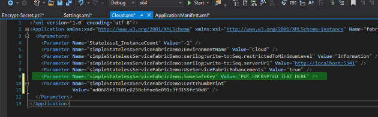
Ok so now we just need to unencrypt the values. How do we do that?
Well this is what I came up with. For me I am using a ServiceConfiguration class that looks like this to store all my settings.
So I need to update this one with the unencrypted values at startup.
Here is my ServiceConfiguration property bag kind of class
using System;
using System.Collections.Generic;
using System.Configuration;
using System.Linq;
using System.Text;
using System.Threading.Tasks;
namespace Stateless1
{
public class ServiceConfiguration
{
public ServiceConfiguration()
{
SomeDummyValue = ConfigurationManager.AppSettings["SomeDummyValue"];
SomeSafeKey = ConfigurationManager.AppSettings["SomeSafeKey"];
}
public string SomeDummyValue { get; set; }
public string SomeSafeKey { get; set; }
}
}
So all that's left is to get the unencrypted values to put into this helper class. Here is how I do that
namespace Stateless1
{
public class Stateless1 : StatelessService, IDisposable
{
private readonly ServiceConfiguration _configuration;
private ILogger _log;
public Stateless1(
StatelessServiceContext context,
ServiceLoggerFactory serviceLoggerFactory,
ServiceConfiguration configuration
) : base(context)
{
if (configuration == null)
{
throw new ArgumentNullException(nameof(configuration));
}
_configuration = configuration;
_log = serviceLoggerFactory.EnrichLoggerForStatelessServiceContext(this);
EnhanceConfigurationForServiceFabric(context, configuration);
_log.Information("Stateless1 constructed ok");
}
private void EnhanceConfigurationForServiceFabric(StatelessServiceContext context, ServiceConfiguration configuration)
{
try
{
var configPackage = context.CodePackageActivationContext.GetConfigurationPackageObject("Config");
var appSettings = configPackage.Settings.Sections["appSettings"];
var useServiceFabricEnhancements = bool.Parse(appSettings.Parameters["simpleStatelessServiceFabricDemo:UseServiceFabricEnhancements"].Value);
var environmentName = appSettings.Parameters["simpleStatelessServiceFabricDemo:EnvironmentName"].Value;
if (useServiceFabricEnhancements)
{
UpdateEncryptedValue(configPackage, "simpleStatelessServiceFabricDemo:SomeSafeKey",
(someSafeKey) => configuration.SomeSafeKey = someSafeKey);
}
else
{
_log.Information("Stateless1 configuration set-up using default Environment='{EnvironmentName}", environmentName);
}
}
catch (Exception ex)
{
_log.Error(ex, "Failed to contruct Stateless1");
throw;
}
}
private void UpdateEncryptedValue(ConfigurationPackage configurationPackage,
string connectString, Action<String> updateServiceConfigurationAction)
{
var param = configurationPackage.Settings.Sections["encryptedSettings"].Parameters[connectString];
updateServiceConfigurationAction(param.IsEncrypted
? param.DecryptValue().ConvertToUnsecureString()
: param.Value);
}
}
}
Yes so far we have been talking about testing a local cluster, that is one running locally on your own box. So for a real cluster you will need to get remote access to the actual nodes that form the real cluster (as created in Portal/PowerShell) and install the certificate on those VMs as described in steps above.
We are using the Azure Service Fabric a fair bit, and it has not let us down so far. We mainly use it for siloed micro services that don't interact with each other that much, so we have not really needed to open any ports. However the scaling aspect of it, and the fact that this can be done via C# FabricClient and PowerShell on demand should we need to scal further is very sweet
{kind=link}